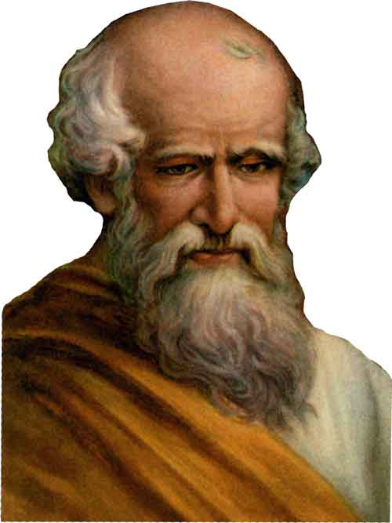
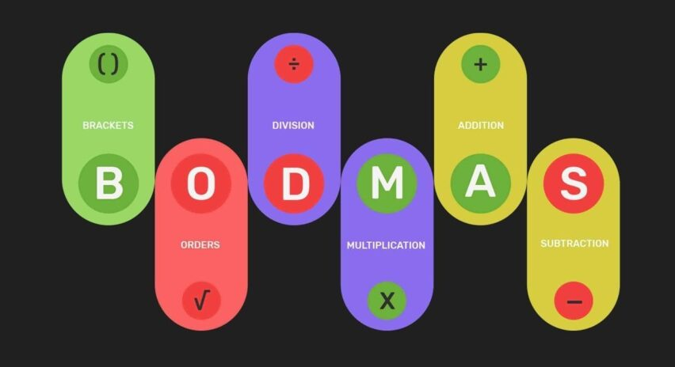
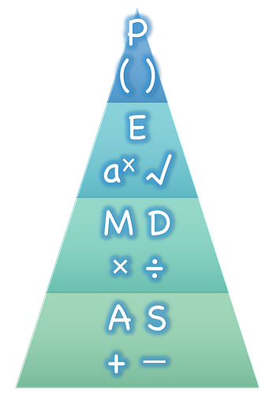

Archimedes, also known as the “Father of Mathematics,” contributed a lot in the field of Mathematics. Not only Mathematics, he made many valuable inventions in the field of Physics as well. Apart from being a mathematician, he was also an astronomer and made many significant contributions in the field of astronomy. In the life span of 75 years, he introduced various laws and theories related to mathematics. Today, we all are able to measure area and volume of different shapes with the help of relevant laws, theorems, and formulae, but we don’t know from where all these laws and formulae came. Area and volume of different 3D and 2D shapes were given by Archimedes. We can not think of mathematics without him and his inventions. Many more inventions made by him are there that we still have to acknowledge. Let us briefly discuss his inventions one by one. |
 |
Mathematics simply means to learn or to study or gain knowledge. The theories and concepts given in mathematics help us understand and solve various types of problems in academic as well as in real life situations. Mathematics is a subject of logic. Learning mathematics will help students to grow their problem-solving and logical reasoning skills. Solving mathematical problems is one of the best brain exercises.
The fundamentals of mathematics begin with arithmetic operations such as addition, subtraction, multiplication and division. These are the basics that every student learns in their elementary school. Here is a brief of these operations.
It explains the order of operations to be performed while solving an expression. According to the BODMAS rule, if an expression contains brackets ((), {}, []) we have first to solve or simplify the bracket followed by ‘order’ (that means powers and roots, etc.), then division, multiplication, addition and subtraction from left to right. Solving the problem in the wrong order will result in a wrong answer.
|
 |
In Canada, this order of operation is also mentioned as BEDMAS(Brackets, exponents, division, multiplication, addition and subtraction). Though the order of operation has given different names in different countries, the meaning for all is the same. While applying the BODMAS rule we should follow the order of these operations.
EXAMPLE
Calculate: 1/2[{-2(1+2)}10]
Step 1: Simplify the terms inside () followed by {}, then [].
Step 2: Operate terms with the terms outside the bracket.
= 1/2 [{-2(3)} 10]
= 1/2 [{-6} 10]
= 1/2 [-60]
= -30
In Mathematics, we do operations like addition, subtraction, multiplication and division. These operations are performed by a certain rule or say there is an order of operation. PEMDAS rule is one of the rules which is exactly equal to BODMAS rule. The full form of PEMDAS is given below: P - Parentheses [{()}]
E - Exponents (Powers and Roots) MD - Multiplication and Division (left to right) (x and ÷) AS - Addition and Subtraction (left to right) (+ and -) whereas the full form of BODMAS is - Brackets Order Division Multiplication Addition and Subtraction. |
 |
EXAMPLE
Calculate: [25 + {14 - (3 x 6)}]
Solution:
[25 + {14 - (3 x 6)}]
As per PEMDAS, here we have perform the operations within the parentheses, first (), second {} and finally []
=[25 + {14 - 18}]
= [25 +{-4}]
Here, we have to perform multiplication for the signs
= 25 - 4
= 21